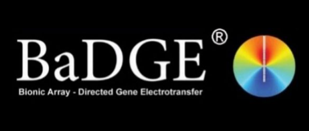
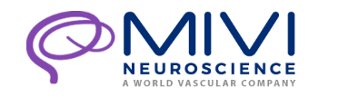
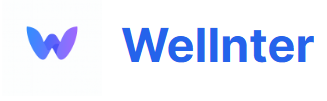
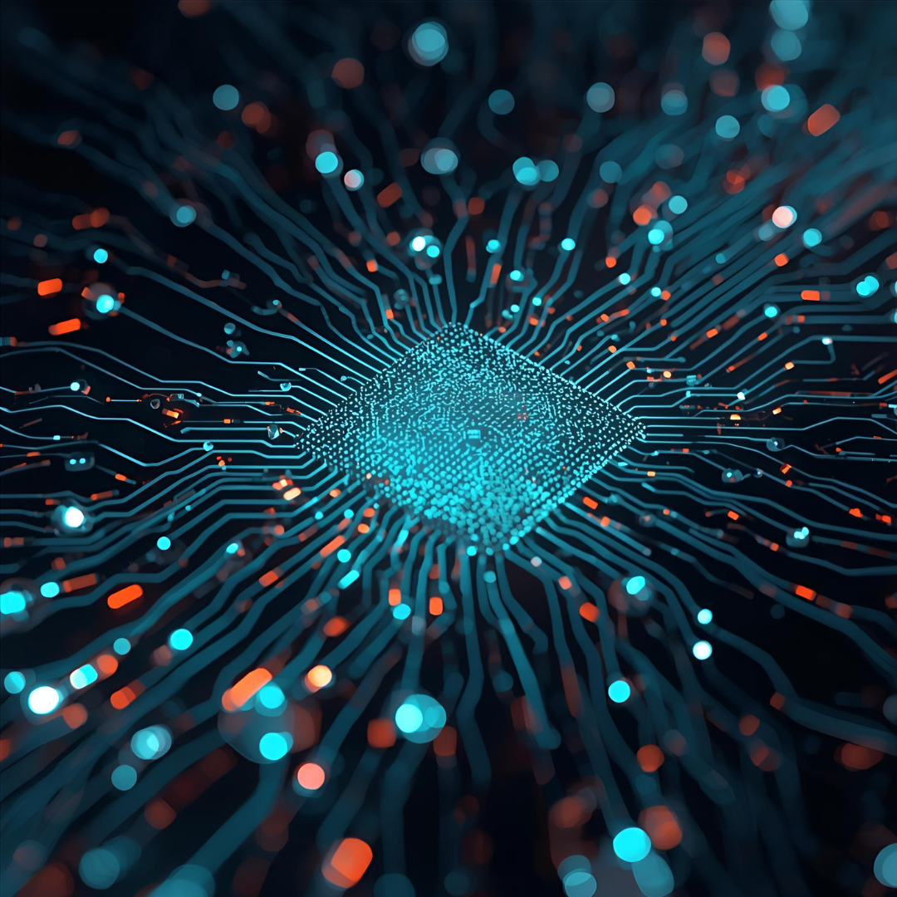
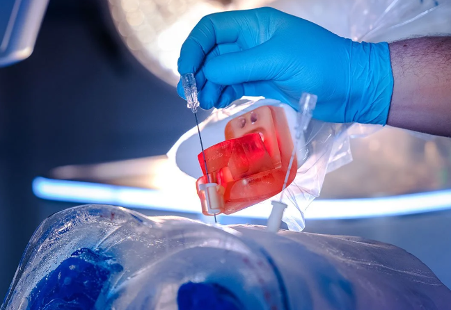

Anastasia Thiessen
Biomedical Imagineer & AI Enthusiast
Biomedical Imagineer & AI Enthusiast
 Let’s connect where everyone pretends to be professional?
Let’s connect where everyone pretends to be professional?
 +61 405 126 677 Want to chat? Call me - talking is more fun than emails.
+61 405 126 677 Want to chat? Call me - talking is more fun than emails.
 thiessenanastasia@gmail.com But hey, I get it… sometimes typing is easier.
thiessenanastasia@gmail.com But hey, I get it… sometimes typing is easier.
📍 Sydney, Australia
I am a biomedical engineer with a passion for developing innovative medical technologies that bridge research and real-world applications. My academic journey across Germany, South Korea, and Australia has provided me with a strong foundation in medical device design, microsystems engineering, and clinical application. Through hands-on experience in R&D, rapid prototyping, and clinical collaborations, I have contributed to projects ranging from robotic assistance systems to implantable biosensors. I also gained valuable exposure to hospital environments and stakeholder engagement, including supporting the German market launch of a neurointervention product and demonstrating it to clinicians. Beyond engineering, I enjoy the sun, surfing, and flat whites, and I am deeply committed to promoting mental health — one of the reasons I am currently based in Sydney.
Wrote my Masters thesis at UNSW with the BaDGE Group. I designed and protoyped a gene therapy vaccination device, taking into consideration mass manufacturing.
Led the German market launch of MIVI catheters for neurointervention, including clinical demonstrations and stakeholder engagement.
Co-founder of Wellnter, a startup focused on making mental health triage easier and more accessible. We participated in the PFC program and continue developing solutions to bridge gaps in mental health care. Because it is what we would have needed.
Co-authored a research paper on holographic sensor design, advancing biomedical applications in diagnostics.
Worked at BEC developing a robotic surgical assistant for biopsy procedures. My tasks included patent search, quality assurance testing as well as protyping an electronic switch system to implement different imaging technologies.
Email: thiessenanastasia@gmail.com